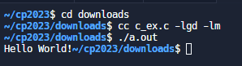
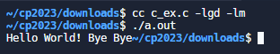
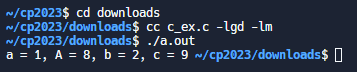
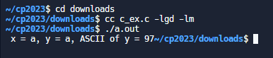
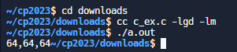
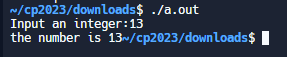
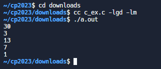
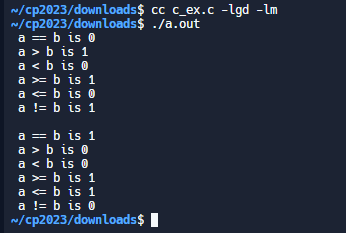
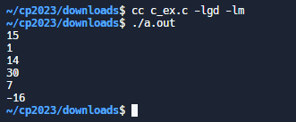

w15 <<
Previous Next >> ANSIC
c_ex
#include <stdio.h>
void main()
{
/* 印出 Hello */
printf("Hello World!");
}

#include <stdio.h>
int main()
{
/* 印出 Hello World! Bye Bye */
printf("Hello World! ");
printf("Bye ");
printf("Bye");
return 0;
}

#include <stdio.h>
int main()
{
int a = 1;
int A = 8;
int b = 2, c;
c = A - a + b;
/* 輸出 a, A, b, c 到螢幕 */
printf( "a = %d, A = %d, b = %d, c = %d ", a, A, b, c );
return 0;
}

#include <stdio.h>
void main()
{
float a = 0.5;
double b = 1.2;
int c = 3;
b = b + a + c;
/* 輸出 a, b, c 到螢幕 */
printf( " a = %3.1f, b = %3.1f, c = %d ", a ,b, c );
}

#include <stdio.h>
int main()
{
char x, y;
x = 'a';
y = (char)97;
/* 輸出 x, y, x, 最後一個是以 ASCII 值顯示 y */
printf( " x = %c, y = %c, ASCII of y = %d", x, y, y );
return 0;
}

#include <stdio.h>
int main() {
int a = 64;
int b = 0x40;
long c = 64L;
printf("%d,%d,%ld", a, b, c); // 使用 %ld 來打印 long 整數型別的變數 c
return 0;
}

#include <stdio.h>
int main()
{
int i;
printf("Input an integer:");
scanf( "%d", &i ); /* ch 前面加個 &(位址運算元) */
printf( "the number is %d", i );
return 0;
}

#include<stdio.h>
int main()
{
int a,b;
a = 10; b = 3;
printf( "%d \n", a * b );
printf( "%d \n", a / b );
printf( "%d \n", a + b );
printf( "%d \n", a - b );
printf( "%d \n", a % b );
return 0;
}

#include <stdio.h>
int main()
{
int a = 10, b = 5;
printf( " a == b is %d \n", a == b );
printf( " a > b is %d \n", a > b );
printf( " a < b is %d \n", a < b );
printf( " a >= b is %d \n", a >= b );
printf( " a <= b is %d \n", a <= b );
printf( " a != b is %d \n", a != b );
printf( "\n" );
b = 10;
printf( " a == b is %d \n", a == b );
printf( " a > b is %d \n", a > b );
printf( " a < b is %d \n", a < b );
printf( " a >= b is %d \n", a >= b );
printf( " a <= b is %d \n", a <= b );
printf( " a != b is %d \n", a != b );
return 0;
}

#include<stdio.h>
void main()
{
int a,b;
a = 15;
b = 1;
printf("%d \n", a | b ); /* a OR b */
printf("%d \n", a & b ); /* a AND b */
printf("%d \n", a ^ b ); /* a XOR b */
printf("%d \n", a << 1 ); /* a 位元左移 1 位 */
printf("%d \n", a >> 1 ); /* a 位元右移一位 */
printf("%d \n", ~a ); /* A 的補數運算 */
}

w15 <<
Previous Next >> ANSIC